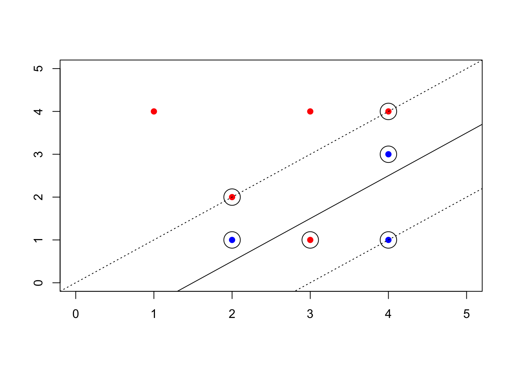
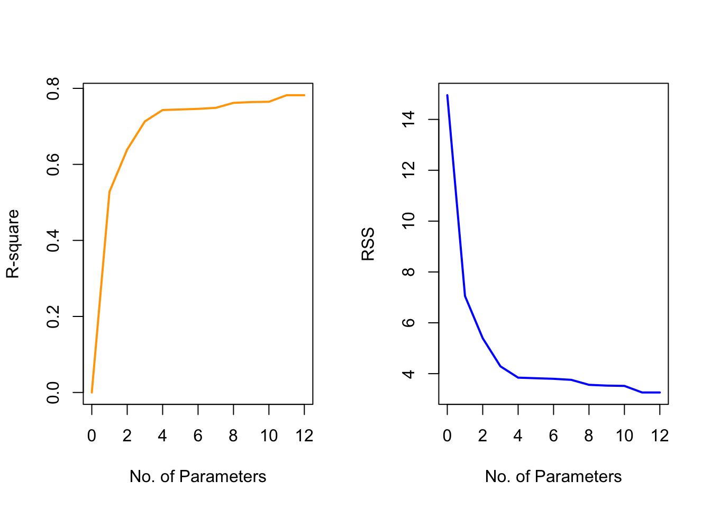

9.5 Gradient Boosting
Forward Stage-wise Additive Model
In a more general framework, consider an additive structure: \[F_T(x) = \sum_{t=1}^{T} \alpha_t f(x; \theta_t)\] and fit a model, by minimizing the loss function \[\min_{\{\alpha_t, \theta_t\}_{t=1}^{T}} \sum_{i=1}^{n} L \bigl( y_i, F_T(x_i)\bigr) \]
We may choose a suitable loss function} for the problem; a base learner \(f(x;\theta)\) with parameter \(\theta\), such as linear, tree. It is difficult to minimize over all \(\{\alpha_t, \theta_t\}_{t=1}^{T}\), so we do this in a stage-wise fashion.
Algorithm
Set \(F_0(x)=0\).
For \(t=1, \ldots, T\)
- Choose \(\{\alpha_t, \theta_t\}\) to minimize the loss \[\min_{\alpha, \theta} \sum_{i=1}^{n} L\Bigl(y_i, F_{t-1}(x_i) + \alpha f(x_i; \theta ) \Bigr)\]
- Update \(F_t(x) = F_{t-1}(x) + \alpha_t f(x; \theta_t)\).
AdaBoost is essentially a forward stage-wise approach using exponential loss. It does not pick an optimal \(f(x; \theta)\) at each step: the tree model is not optimized, we just need some model that is better than random. Only the step size \(\alpha_t\) is optimized at each \(t\) given the fitted \(f(x; \theta_t)\)
Another example of a forward stage-wise additive model is the forward stage-wise linear regression:
For each step we use a single variable linear model: \[f(x,j) = sign \bigl(Cor(X_j, r) \bigr) X_j\] where \(r\) is the residual, as \(r_i = y_i - F_{t-1}(x_i)\) and \(j\) is the index that has the largest absolute correlation with \(r\). Then, we give a very small step size \(\alpha_t\), say, \(\alpha_t = 10^{-5}\) and with sign equal to the correlation between \(X_j\). \(F_t(x)\) here is almost equivalent to the Lasso solution path (as \(t\) changes)
Alternatively, we can think of \(r_i\) as the gradient to the squared-error loss: \[r_{it} = -\Biggl[ \frac{\partial(y_i - F(x_i))^2 }{\partial F(x_i) } \Biggr]_{F(x_i) = F_{t-1}(x_i)}\] So, we fit the weak leaner \(f_t(x)\) to the residuals, and update the fitted model \(F_t\). This, of course, can be generalized into any loss function \(L\):
At each iteration \(t\), calculate “pseudo-residuals”, i.e., the negative gradient for each observation \[g_{it} = -\Biggl[ \frac{\partial L(y_i, F(x_i)) }{\partial F(x_i) } \Biggr]_{F(x_i) = F_{t-1}(x_i)}\]
Fit \(f_t(x, \theta_t)\) to pseudo-residual \(g_{it}\).
Search for a step length \[\alpha_t = \arg \min_{\alpha} \sum_{i=1}^{n} L\Bigl( y_i, \, F_{t-1}(x_i) + \alpha f(x_i;\theta_t) \Bigr )\]
Update \(F_t(x) = F_{t-1}(x) + \alpha_t f(x; \theta_t)\).
Hence, the only change when modeling different outcomes is to choose the loss function, and derive the pseudo-residuals. For gradient boosting using CART as base classifier, we can make it more sophisticated by optimizing \(\alpha_t\) at each terminal node.
9.5.1 Gradient Boosting in R
The stage-wise view from forward regression suggests a broader principle: model fitting can be framed as functional gradient descent. Rather than updating a single pre-specified coefficient, we iteratively update the fitted function in the direction of the negative gradient of the loss.
The following example shows the result of using a tree learner :
library(gbm)
# a simple regression problem
x <- seq(0, 1, 0.001)
fx <- function(x) 2*sin(3*pi*x)
y <- fx(x) + rnorm(length(x))
plot(x, y, pch = 19, ylab = "y", col = "gray", cex = 0.5)
# plot the true regression line
lines(x, fx(x), lwd = 2, col = "deepskyblue")
We can see that the fitted model progressively approximates the true function.
# fit regression boosting
# (Using a large shrinkage here to visualize stagewise fits; in practice use 0.1 or smaller.)
gbm.fit <- gbm(y ~ x, data = data.frame(x, y), distribution = "gaussian",
n.trees = 300, shrinkage = 0.5, bag.fraction = 0.8)
# plot the fitted regression function at several iterations
par(mfrow=c(2,3))
size <- c(1, 5, 10, 50, 100, 300)
for (i in 1:6) {
par(mar=c(2,2,3,1))
plot(x, y, pch = 19, ylab = "y", col = "gray", cex = 0.5)
lines(x, fx(x), lwd = 2, col = "deepskyblue")
# additive score F(x)
Fx <- predict(gbm.fit, n.trees = size[i])
lines(x, Fx, lwd = 3, col = "darkorange")
title(paste("# of Iterations = ", size[i]))
}
xgboost
xgboost (Chen and Guestrin 2016) is a popular and efficient implementation of gradient boosting that supports various loss functions and regularization techniques. It is widely used in machine learning competitions and real-world applications due to its speed and performance.
set.seed(2025)
n <- 2000
p <- 15
X <- matrix(rnorm(n*p), n, p)
f_true <- function(x) 2*sin(x[,1]) + 0.5*x[,2]^2 - 1.5*(x[,3]>0)
y <- f_true(X) + rnorm(n, sd = 1)
idx <- sample.int(n, floor(0.7*n))
dtrain <- xgboost::xgb.DMatrix(X[idx,], label = y[idx])
dvalid <- xgboost::xgb.DMatrix(X[-idx,], label = y[-idx])
params <- list(
objective = "reg:squarederror",
eval_metric = "rmse",
eta = 0.05, # shrinkage
max_depth = 4, # tree depth
subsample = 0.8, # row subsampling
colsample_bytree = 0.8, # column subsampling
min_child_weight = 5, # node min hessian-weighted size
lambda = 1.0, # L2 on leaf weights
alpha = 0 # L1 on leaf weights (optional)
)
watch <- list(train = dtrain, valid = dvalid)
fit <- xgboost::xgb.train(
params = params,
data = dtrain,
nrounds = 3000,
watchlist = watch,
early_stopping_rounds = 50,
verbose = 0
)
cat("Best iteration:", fit$best_iteration,
" Valid RMSE:", fit$best_score, "\n")## Best iteration: 114 Valid RMSE: 1.089309 # Feature importance (gain-based)
imp <- xgboost::xgb.importance(model = fit, feature_names = paste0("x",1:p))
head(imp, 8)## Feature Gain Cover Frequency
## <char> <num> <num> <num>
## 1: x1 0.52496002 0.22033565 0.14871256
## 2: x2 0.18529614 0.25100189 0.21229637
## 3: x3 0.16868985 0.10401314 0.08145034
## 4: x11 0.01362980 0.04472336 0.05675250
## 5: x14 0.01337181 0.03781700 0.06043090
## 6: x9 0.01250684 0.04609835 0.05570152
## 7: x4 0.01166632 0.04436425 0.05359958
## 8: x15 0.01069085 0.02917928 0.04046243 # Predictions and validation RMSE
pred <- predict(fit, dvalid)
rmse <- sqrt(mean((pred - y[-idx])^2))
rmse## [1] 1.089309